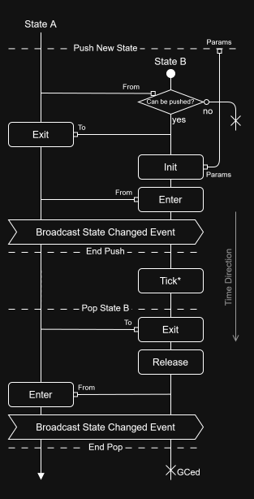
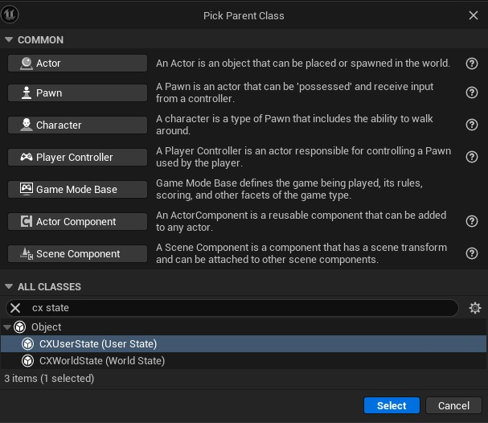
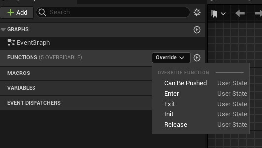
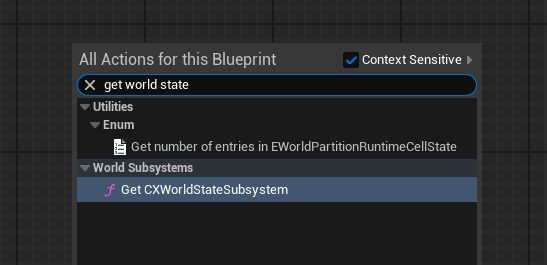
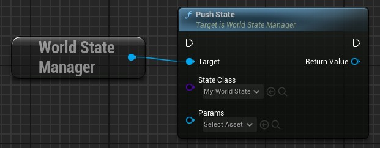
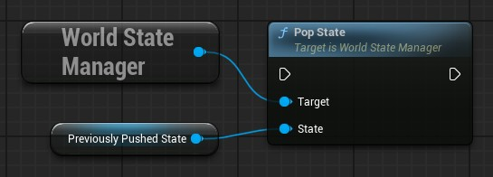
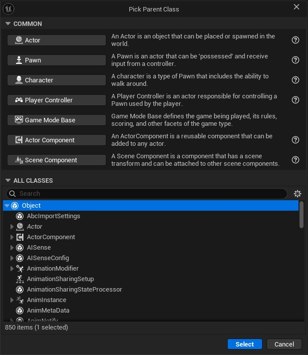
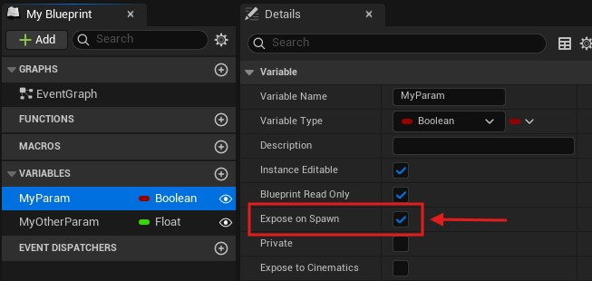
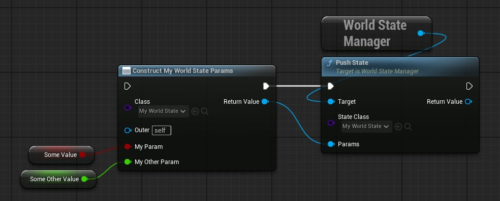
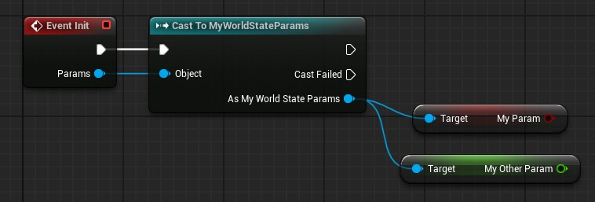

#
States
The States module will help you manage your player and world states while preventing conflicts between them.
There are 2 subsystems related to states added by the plugin:
- User States: a
Local Player Subsystemwhich will manage a state system for eachLocal Playerin your game. - World States: a
World Subsystemwhich will manage a single state system for the currentWorld.
#
Some Use Cases Example
I'll start by exposing you a simple yet common use case in many games.
Let say you have a player character that can roam around the world, and there may be sometimes some dialogs popping up when talking to NPC characters, and the player may show a pause menu at any time when pressing a button. For both cases you want to disallow your player to interact with the world during those states.
When a dialog pops out, or when the player resume the game, you want now your player to be able to interact with the world again, of course.
However if you re-allow world interactions when resuming game while the pause menu has been opened during a dialog, then your player can interact with the world when it should not be allowed!
Here comes this plugin, by defining some states like Playing State, Dialog State and Menu State, they allow you to switch state and define behaviors to each state, for example, by allowing world interactions when entering the Playing State and disallow when exiting it.
No state other than the Playing State should touch the world interaction toggle, thus you are sure to always enable it in the proper state.
#
A Stack-Based State System
The state system is based on a stack, meaning you push a new state on top of the others, and you pop a state from the top of the stack.
NOTE
While in theory you can't pop an element in the middle of a stack, in practice you can pop any state from the stack in this plugin, because it may be needed in some cases.
#
Lifecycle of a state

The state life is made up of those different functions:
Init: Initializes the state at its creation when pushed, you can pass some parameters when callingPush Statefrom the subsystem.Enter: Called when the state become active. You have access to the previous active state (From Stateinput).Tick: Only available forWorld States! Same behavior as the actorsTickevents.Exit: Called when becoming inactive (when state is popped or another state is pushed on top). You have access to the next active state (To Stateinput).Release: Cleanup must be done here if necessary, the state is no longer alive and may be Garbage Collected at anytime after that.
You can refer to the diagram beside to know when each one is called relatively to the others when doing a push or pop (time passes from up to down).
* Tick function exists only for World States.
#
Getting Started
#
What are User States
I call "user" states a local physical player state. Since the Player State is already existing in UE for a whole another topic, I decided to use the word "user" instead of "player".
You should use them for states on the scope of the player, mainly what are client-side only.
For example, a dialog with an NPC, or going into the game settings menu.
#
What are World States
This state stack is unique for the whole world.
NOTE
It is not replicated!
So you can either have different world states for each client, or manage the world states only on server-side.
#
Create Your States
To create a new state, just create a new blueprint class, and search for CX State.

You can then override its functions to define its behavior.

#
Push and Pop your States
For the World States you just have to call the Get Subsystem node, then call the Push State function on it and finally choose the World State class you want to push.


To pop a state, the best way is to keep a reference of the state you've pushed, and pass it to the Pop State function.
INFO
Providing the state to pop prevents your code to remove unexpectedly a state managed by something else, and also allows you to pop a state even if it's not the active state.

#
How to pass Parameters to your States
Any UObject derived class can be used as a parameter.
So you can pass an Actor or a PlayerController if you want.
However I prefer to always create a custom UObject class used only for parameters, so you can reference your Actor or any other object, and you can add more parameters too, and easier to maintain too.
So, here is my preferred method to pass parameters to a state.
First, create a new blueprint class with UObject as parent and add all your parameter variables in it.
NOTE
Make sure to mark your variables as Expose on Spawn, it will be handy later!


After that, before you push a new state, construct a new instance of your param class with your parameters filled in, and pass it to the Push State node.

Finally, you can access it in the Init event of your state, you just have to cast it to your blueprint class, and then you can get your parameters!
